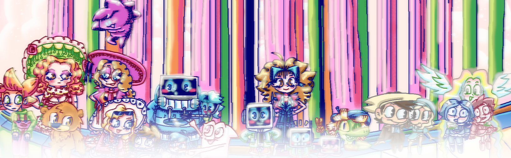

Я створюю персонажів ще змалку. Донині у мене їх набралося дуже багато, точно більш за сотню.
Тут ви знайдете чимало інформації про моїх персонажів. Енциклопедія поповнюватиметься поволі, тому що персонажів багато, а я ж не завжди матиму час працювати з цим сайтом.